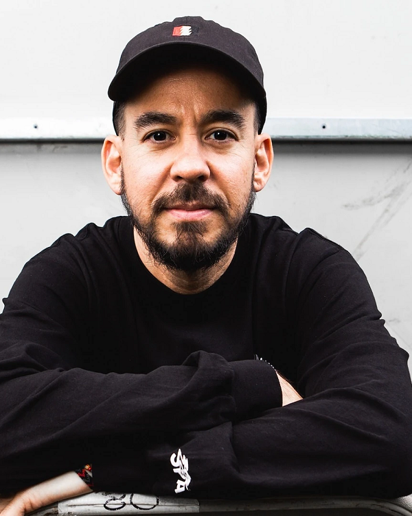

Emily Armstrong
Emily Marcia Armstrong amerikai zenész, énekes és dalszerző. A Dead Sara egyik alapítója.
2024 szeptemberében csatlakozott a Linkin Parkhoz a banda énekeseként, miután 2017-ben meghalt Chester Bennington.
Instagram: https://www.instagram.com/emilyarmstrong/

Mike Shinoda
Michael „Mike” Kenji Shinoda amerikai zenész, producer. A Linkin Park egyik alapítója, a zenekar rappere, énekese, dalszerzője, billentyűse, ritmusgitárosa.
A Fort Minor rappere. Ezenkívül ő végzi a grafikai, illetve keverési munkákat mindkét együttesben.
Instagram: https://www.instagram.com/m_shinoda/

Joseph Hahn
Joseph Hahn, ismertebb nevén Joe Hahn az amerikai Linkin Park nevű együttes DJ-je. A Linkin Park összes stúdióalbumán játszott.
Mr. Hahn vagy Chairman Hahn néven is ismert.
Instagram: https://www.instagram.com/mrjoehahn/

Brad Delson
Bradford Phillip Delson amerikai zenész, gitáros, lemezproducer. A Linkin Park alapító tagja Mike Shinodával és Rob Bourdonnal. Ezen kívül játszott a Relative Degree nevű együttesben, Rob Bourdonnal együtt.
A Linkin Park mind a 7 stúdióalbumán játszott gitáron, esetenként Mike Shinodával együtt.
Instagram: https://www.instagram.com/braddelson/

David Michael Farrell
David Michael Farrell, színpadi nevén Phoenix, a Linkin Park jelenlegi basszusgitárosa, háttérénekese. Tagja volt a Snax nevű együttesnek is. A Linkin Parkhoz együtt csatlakozott Mark Wakefield-del, Joseph Hahn-nal ami akkor még Xero néven futott. Később, körülbelül 1996-97 környékén csatlakozott a Tasty Snax zenekarhoz, ahol két albumon basszusgitározott.
Dave 1999-től 2001-ig kilépett a Linkin Parkból majd 2001-ben visszatért. A Linkin Parknál 7 stúdióalbumon basszusgitározott.
Instagram: https://www.instagram.com/phoenixlp/

Colin Brittain
Colin Cunningham, művésznevén Colin „Doc” Brittain, amerikai dalszerző, producer és zenész, aki a Warner Chappell Music kiadóhoz szerződött.
2023-ban csatlakozott a Linkin Parkhoz a zenekar dobosaként. Mielőtt a Linkin Park tagja lett, olyan előadóknak írt és producerkedett, mint a Papa Roach, a Story of the Year, a 311, az A Day to Remember, a Foundry, a Dashboard Confessional, az 5 Seconds of Summer, a From Ashes to New és a One Ok Rock.
Instagram: https://www.instagram.com/colinbrittain/